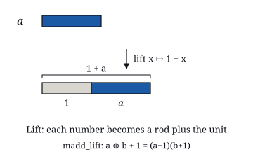
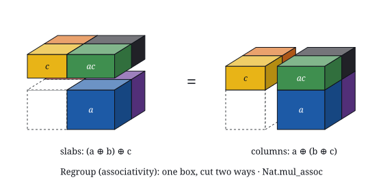
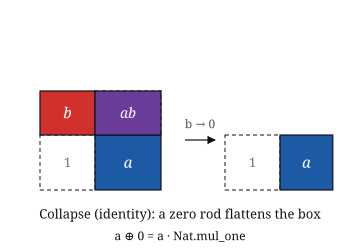
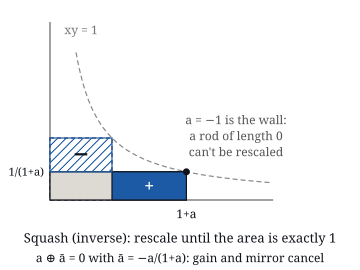
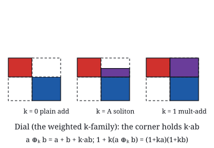
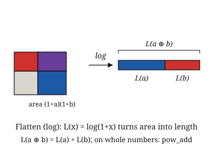

Nine moves cover the core laws
Each algebraic step gets one move. The move names are the tactic names, and the lemma is what the tactic rewrites with. All nine are built; the plates here are drawn by hand to explain them.

Lift
x ↦ 1+x attaches the unit. Every fused rung is the plain one seen through this. lift_back_ring, MultAdd.lift_inj

The circle operation
Two rods make a rectangle; drop the unit square. a ⊕ b = a + b + ab. circ_lift, mpow_lift, circK_lift

Regroup
Associativity: the box is the same whether you cut it into slabs or columns. Semiring.mul_assoc

Collapse
Identity: a zero-length rod flattens a dimension and its corners vanish. Semiring.mul_one, circ_zero

Squash
Inverse: shrink the other side to 1/(1+a) along the curve xy = 1. The gained strip and its mirror cancel. a = −1 is the wall. Needs a field. inv_one_add, Field.mul_inv_cancel

Dial
The weighted k-family: the corner holds k·ab. k = 0 is plain addition (an empty corner, as in Burgers); k = 1 is the circle operation; k = A is the soliton weight. circK_scale, circK_one

Flatten
L(x) = log(1+x) turns area into length, so the circle operation becomes adding. On whole numbers the same move is exponents adding. pow_add', mpow_add

Extrude
Each rung adds a dimension: length, area, volume. Rung n+1 iterates rung n. fexp_iter, ftet_iter
| Move | Algebra | Shape | Lemma it wraps |
|---|---|---|---|
| Lift | a ↦ 1+a | attach the unit to a rod | lift_back_ring, MultAdd.lift_inj |
| Swap | a ⊕ b = b ⊕ a | reflect across the diagonal | CommSemiring.mul_comm |
| Regroup | (a ⊕ b) ⊕ c = a ⊕ (b ⊕ c) | slabs ↔ columns of one box | Semiring.mul_assoc |
| Collapse | a ⊕ 0 = a | zero-length side flattens | Semiring.mul_one, circ_zero |
| Squash | a ⊕ ā = 0 | rescale to area 1 on xy = 1 | inv_one_add, Field.mul_inv_cancel |
| Dial | a + b + k·ab | corner filled to weight k | circK_scale, circK_one |
| Flatten | L(a ⊕ b) = L(a) + L(b) | area becomes length | pow_add', mpow_add |
| Extrude | a ⊛ (b+1) = a ⊕ (a ⊛ b) | one more dimension | fexp_iter, Semiring.pow_succ |